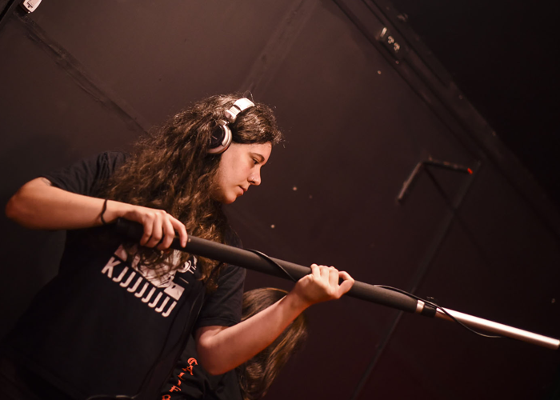

Quien soy?
Mi nombre es Sofía Caracotche, soy oriunda de Trenque Lauquen y tengo 30 años. Estudié Artes Audiovisuales en la UNA (Universidad Nacional del Arte), con orientación en Sonido. Hace años me dedico a grabar sonido directo y a hacer post produccion de sonido. Además, trabajo como Cámara o Asistente de Cámara, y soy fanática de la Fotografía, por lo que me dedico a retratar imágenes inspiradoras con mi cámara, a veces a bandas, en otros momentos motivada por hechos sociales o incluso por la naturaleza. Si considerás que puedo aportar a tu proyecto, no dudes en escribirme (tenés disponible un formulario en Contacto, y sino abajo de todo vas a poder encontrar mis redes sociales).
Como te comentaba más arriba, retratar los momentos más emocionantes de distintas bandas y cantantes es algo que me motiva mucho hacer, así como grabar episodios de producciones para internet. Siempre procurando que el guión sea la herramienta número uno al momento de trabajar, ya que tanto para el sonido como para la cámara, conocer la secuencia de planos y la lógica de las historias, es primordial. Creo firmemente que es clave el trabajo en equipo para lograr los mejores resultados, y soy una afortunada de haber ido conociendo gente de este mundo con quien trabajar, compartir ideas, y producir contenidos tan gratificantes.